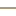

<!doctype html>
<html lang="en">
    <head>
        <meta charset="utf-8">
        <meta http-equiv="X-UA-Compatible" content="IE=edge">
        <meta name="viewport" content="initial-scale=1,user-scalable=no,maximum-scale=1,width=device-width">
        <meta name="mobile-web-app-capable" content="yes">
        <meta name="apple-mobile-web-app-capable" content="yes">
        <link rel="stylesheet" href="css/leaflet.css">
        <link rel="stylesheet" href="css/L.Control.Layers.Tree.css">
        <link rel="stylesheet" href="css/qgis2web.css">
        <link rel="stylesheet" href="css/fontawesome-all.min.css">
        <style>
        html, body, #map {
            width: 100%;
            height: 100%;
            padding: 0;
            margin: 0;
        }
        </style>
        <title>WebGis Tempat Wisata di Kecamatan Banyuwangi</title>
    </head>
    <body>
        <div id="map">
        </div>
        <script src="js/qgis2web_expressions.js"></script>
        <script src="js/leaflet.js"></script>
        <script src="js/L.Control.Layers.Tree.min.js"></script>
        <script src="js/leaflet.rotatedMarker.js"></script>
        <script src="js/leaflet.pattern.js"></script>
        <script src="js/leaflet-hash.js"></script>
        <script src="js/Autolinker.min.js"></script>
        <script src="js/rbush.min.js"></script>
        <script src="js/labelgun.min.js"></script>
        <script src="js/labels.js"></script>
        <script src="data/Jarak2kmdaritempatwisata_0.js"></script>
        <script src="data/Jarak1kmdaritempatwisata_1.js"></script>
        <script>
        var map = L.map('map', {
            zoomControl:false, maxZoom:28, minZoom:1
        }).fitBounds([[-8.277372384246084,114.32157362913398],[-8.182891650931671,114.52458475460492]]);
        var hash = new L.Hash(map);
        map.attributionControl.setPrefix('<a href="https://github.com/tomchadwin/qgis2web" target="_blank">qgis2web</a> &middot; <a href="https://leafletjs.com" title="A JS library for interactive maps">Leaflet</a> &middot; <a href="https://qgis.org">QGIS</a>');
        var autolinker = new Autolinker({truncate: {length: 30, location: 'smart'}});
        // remove popup's row if "visible-with-data"
        function removeEmptyRowsFromPopupContent(content, feature) {
         var tempDiv = document.createElement('div');
         tempDiv.innerHTML = content;
         var rows = tempDiv.querySelectorAll('tr');
         for (var i = 0; i < rows.length; i++) {
             var td = rows[i].querySelector('td.visible-with-data');
             var key = td ? td.id : '';
             if (td && td.classList.contains('visible-with-data') && feature.properties[key] == null) {
                 rows[i].parentNode.removeChild(rows[i]);
             }
         }
         return tempDiv.innerHTML;
        }
        // add class to format popup if it contains media
		function addClassToPopupIfMedia(content, popup) {
			var tempDiv = document.createElement('div');
			tempDiv.innerHTML = content;
			if (tempDiv.querySelector('td img')) {
				popup._contentNode.classList.add('media');
					// Delay to force the redraw
					setTimeout(function() {
						popup.update();
					}, 10);
			} else {
				popup._contentNode.classList.remove('media');
			}
		}
        var title = new L.Control({'position':'topright'});
        title.onAdd = function (map) {
            this._div = L.DomUtil.create('div', 'info');
            this.update();
            return this._div;
        };
        title.update = function () {
            this._div.innerHTML = '<h2>WebGis Tempat Wisata di Kecamatan Banyuwangi</h2>';
        };
        title.addTo(map);
        var zoomControl = L.control.zoom({
            position: 'topleft'
        }).addTo(map);
        var bounds_group = new L.featureGroup([]);
        function setBounds() {
        }
        function pop_Jarak2kmdaritempatwisata_0(feature, layer) {
            var popupContent = '<table>\
                    <tr>\
                        <td colspan="2">' + (feature.properties['Name'] !== null ? autolinker.link(feature.properties['Name'].toLocaleString()) : '') + '</td>\
                    </tr>\
                    <tr>\
                        <td colspan="2">' + (feature.properties['Alamat'] !== null ? autolinker.link(feature.properties['Alamat'].toLocaleString()) : '') + '</td>\
                    </tr>\
                    <tr>\
                        <td colspan="2">' + (feature.properties['Gambar'] !== null ? autolinker.link(feature.properties['Gambar'].toLocaleString()) : '') + '</td>\
                    </tr>\
                    <tr>\
                        <td colspan="2">' + (feature.properties['Beroperasi'] !== null ? autolinker.link(feature.properties['Beroperasi'].toLocaleString()) : '') + '</td>\
                    </tr>\
                    <tr>\
                        <td colspan="2">' + (feature.properties['HTM'] !== null ? autolinker.link(feature.properties['HTM'].toLocaleString()) : '') + '</td>\
                    </tr>\
                    <tr>\
                        <td colspan="2">' + (feature.properties['Rating'] !== null ? autolinker.link(feature.properties['Rating'].toLocaleString()) : '') + '</td>\
                    </tr>\
                    <tr>\
                        <td colspan="2">' + (feature.properties['Deskripsi'] !== null ? autolinker.link(feature.properties['Deskripsi'].toLocaleString()) : '') + '</td>\
                    </tr>\
                    <tr>\
                        <td colspan="2">' + (feature.properties['type'] !== null ? autolinker.link(feature.properties['type'].toLocaleString()) : '') + '</td>\
                    </tr>\
                    <tr>\
                        <td colspan="2">' + (feature.properties['start'] !== null ? autolinker.link(feature.properties['start'].toLocaleString()) : '') + '</td>\
                    </tr>\
                </table>';
            var content = removeEmptyRowsFromPopupContent(popupContent, feature);
			layer.on('popupopen', function(e) {
				addClassToPopupIfMedia(content, e.popup);
			});
			layer.bindPopup(content, { maxHeight: 400 });
        }

        function style_Jarak2kmdaritempatwisata_0_0() {
            return {
                pane: 'pane_Jarak2kmdaritempatwisata_0',
                opacity: 1,
                color: 'rgba(108,141,150,1.0)',
                dashArray: '',
                lineCap: 'square',
                lineJoin: 'bevel',
                weight: 1.0,
                fillOpacity: 0,
                interactive: true,
            }
        }
        map.createPane('pane_Jarak2kmdaritempatwisata_0');
        map.getPane('pane_Jarak2kmdaritempatwisata_0').style.zIndex = 400;
        map.getPane('pane_Jarak2kmdaritempatwisata_0').style['mix-blend-mode'] = 'normal';
        var layer_Jarak2kmdaritempatwisata_0 = new L.geoJson(json_Jarak2kmdaritempatwisata_0, {
            attribution: '',
            interactive: true,
            dataVar: 'json_Jarak2kmdaritempatwisata_0',
            layerName: 'layer_Jarak2kmdaritempatwisata_0',
            pane: 'pane_Jarak2kmdaritempatwisata_0',
            onEachFeature: pop_Jarak2kmdaritempatwisata_0,
            style: style_Jarak2kmdaritempatwisata_0_0,
        });
        bounds_group.addLayer(layer_Jarak2kmdaritempatwisata_0);
        function pop_Jarak1kmdaritempatwisata_1(feature, layer) {
            var popupContent = '<table>\
                    <tr>\
                        <td colspan="2">' + (feature.properties['Name'] !== null ? autolinker.link(feature.properties['Name'].toLocaleString()) : '') + '</td>\
                    </tr>\
                    <tr>\
                        <td colspan="2">' + (feature.properties['Alamat'] !== null ? autolinker.link(feature.properties['Alamat'].toLocaleString()) : '') + '</td>\
                    </tr>\
                    <tr>\
                        <td colspan="2">' + (feature.properties['Gambar'] !== null ? autolinker.link(feature.properties['Gambar'].toLocaleString()) : '') + '</td>\
                    </tr>\
                    <tr>\
                        <td colspan="2">' + (feature.properties['Beroperasi'] !== null ? autolinker.link(feature.properties['Beroperasi'].toLocaleString()) : '') + '</td>\
                    </tr>\
                    <tr>\
                        <td colspan="2">' + (feature.properties['HTM'] !== null ? autolinker.link(feature.properties['HTM'].toLocaleString()) : '') + '</td>\
                    </tr>\
                    <tr>\
                        <td colspan="2">' + (feature.properties['Rating'] !== null ? autolinker.link(feature.properties['Rating'].toLocaleString()) : '') + '</td>\
                    </tr>\
                    <tr>\
                        <td colspan="2">' + (feature.properties['Deskripsi'] !== null ? autolinker.link(feature.properties['Deskripsi'].toLocaleString()) : '') + '</td>\
                    </tr>\
                    <tr>\
                        <td colspan="2">' + (feature.properties['type'] !== null ? autolinker.link(feature.properties['type'].toLocaleString()) : '') + '</td>\
                    </tr>\
                    <tr>\
                        <td colspan="2">' + (feature.properties['start'] !== null ? autolinker.link(feature.properties['start'].toLocaleString()) : '') + '</td>\
                    </tr>\
                </table>';
            var content = removeEmptyRowsFromPopupContent(popupContent, feature);
			layer.on('popupopen', function(e) {
				addClassToPopupIfMedia(content, e.popup);
			});
			layer.bindPopup(content, { maxHeight: 400 });
        }

        function style_Jarak1kmdaritempatwisata_1_0() {
            return {
                pane: 'pane_Jarak1kmdaritempatwisata_1',
                opacity: 1,
                color: 'rgba(139,119,77,1.0)',
                dashArray: '',
                lineCap: 'square',
                lineJoin: 'bevel',
                weight: 1.0,
                fillOpacity: 0,
                interactive: true,
            }
        }
        map.createPane('pane_Jarak1kmdaritempatwisata_1');
        map.getPane('pane_Jarak1kmdaritempatwisata_1').style.zIndex = 401;
        map.getPane('pane_Jarak1kmdaritempatwisata_1').style['mix-blend-mode'] = 'normal';
        var layer_Jarak1kmdaritempatwisata_1 = new L.geoJson(json_Jarak1kmdaritempatwisata_1, {
            attribution: '',
            interactive: true,
            dataVar: 'json_Jarak1kmdaritempatwisata_1',
            layerName: 'layer_Jarak1kmdaritempatwisata_1',
            pane: 'pane_Jarak1kmdaritempatwisata_1',
            onEachFeature: pop_Jarak1kmdaritempatwisata_1,
            style: style_Jarak1kmdaritempatwisata_1_0,
        });
        bounds_group.addLayer(layer_Jarak1kmdaritempatwisata_1);
        map.addLayer(layer_Jarak1kmdaritempatwisata_1);
        var baseMaps = {};
        var overlaysTree = [
            {label: ' Jarak 1 km dari tempat wisata', layer: layer_Jarak1kmdaritempatwisata_1},
            {label: ' Jarak 2 km dari tempat wisata', layer: layer_Jarak2kmdaritempatwisata_0},]
        var lay = L.control.layers.tree(null, overlaysTree,{
            //namedToggle: true,
            //selectorBack: false,
            //closedSymbol: '&#8862; &#x1f5c0;',
            //openedSymbol: '&#8863; &#x1f5c1;',
            //collapseAll: 'Collapse all',
            //expandAll: 'Expand all',
            collapsed: false, 
        });
        lay.addTo(map);
        setBounds();
        </script>
    </body>
</html>
